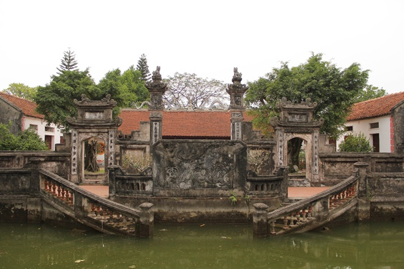

Clay phong of Ho village are a traditional toy of Kinh Bac children in ancient times and are also used in temples and pagodas for worship.
This set of toys has become a beautiful folk culture, contributing to educating the younger generation about Vietnamese history and cultural identity. In the old Mid-Autumn Festival tray, in addition to the tray of five fruits, moon cakes, and sticky rice cakes, there must be a paper doctor, a star lantern, and a set of clay figurines.
The set of clay figurine consists of five characters, each with different meanings, but with connections: the bird symbolizes the desire for peace; the turtle is associated with the ocean and is a sacred symbol in the Vietnamese spirituality; the elderly and children symbolize the continuation of tradition, and the Buddha statue is often placed in the middle with spiritual meaning, educating generations to live a good life.
To make clay phong, you have to dig clay from the fields, or ponds, lotus ponds during the dry season. The soil has very good adhesion, which loam cannot match. The soil is dug at a depth of 2.5 to 3 m, and only about 20 to 30 cm is taken to have a smooth, clean texture. Then dry it, put it in a mortar, pound it into a fine powder and then sift it until it has a cool, smooth texture and a light gray color.
Another ingredient used is paper pulp, the paper is soaked in water for seven days until it is completely crushed, then mixed with clay powder. Mix by hand, and use a pestle to pound like mixing rice cake until the mixture is combined to a smooth, elastic consistency, and if you roll it with your hand and it does not stick, it meets the requirements.
Making phong does not require sophisticated skills, the key is to maintain a familiar, rustic appearance. There are not many colors to paint the phoenix, only a few basic colors: white, yellow, blue, red.
After the phong is shaped, it is dried in the sun until it dries and completely avoids water, then covered with a mixture of white gypsum and glutinous rice paste mixed with water in the right ratio, filtered through a cloth until it is very smooth and then painted with color. Although not fired, the phoenix products are durable and sturdy.